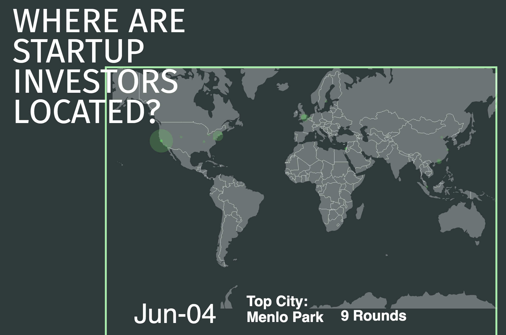

Unicorn Viz:
TechCrunch Map of Investors and Startups
[d3] [Design] [Interactive Narrative]
Involved in overall concept and design and developed d3 section on 'What markets are unicorns getting funding for?'
The ever-changing nature of the technology sector makes it difficult for people to wrap their heads around on what exactly is going on inside this world. We have chosen to apply a data-driven storytelling approach to illuminate some trends as we drill down into the CrunchBase dataset. Our interface is designed to allow users to see different high-level views of the data. In the interface we are asking many questions about the data, such as where the majority of VC funding is coming from and into what startup markets. However we aim to allow users to explore their own angles of inquiry. Although we are not providing any answers as to why different VCs and startups fail or succeed, we hope to allow users to compare different aspects of the data and compare overall trends. They can see amounts of funding reported and received from different countries, compare funding between markets and and against the total and averages of all markets, and contrast funding reported in all startup markets with those valued at $1 billion (Unicorns) which is one metric of startup success. We also cleaned and selected the data from the past ten years, which seemed to be the richest reporting of funding. By creating these visualizations we are helping the user make sense of the data at a high level, where they might want to pursue further, more detailed, inquiries after looking at the bigger picture or if this dataset mimics or differs from other resources related to VCs and startups.
The design for the visualization was inspired by the current aesthetics in startup and VC culture, particularly that of financial related media such as Forbes. By using serif fonts for the title and body text and sans serif fonts for the section title as well as bordered boxes for containing and connecting different pieces of information, the interface took a contemporary spin on classic business visual styles. Using a single page site for layering and displaying the different information and visualizations was another design choice to keep an editorial look. Additionally, we utilized a floating side menu of our questions as the dominant navigation for the page, which also mimics the covers’ use of side text to ask questions that tell the narrative of the content.
This exploratory data analysis was crucial for the development of our final visualization. We decided to focus on the interplay between market, time and space. From our user studies, we deduced that users were most interested in this combination. Showing the multitude of intricate layers behind the dataset and the venture capitalist and startup scene made this problem even more difficult. Thus the final visualization starts very general and becomes progressively more detailed, aiming to show different and interesting angles of the data. This initial analysis also demonstrated the nuances of the dataset—namely the concentrated distribution in both market and country.
Our usability tests with fellow MIMS students focused on the clarity of the visualization. Our initial charts and premise resulted in complex combinations of graphs and we wanted to make sure that they were understandable by our audience. This involved the correct spacing between elements to understand grouping and sufficient labeling to support comprehension. During the initial design phase, we prototyped a world map with money bubbles and another bubble chart divided by market. The feedback we received was regarding the usefulness of these graphs and to tweak them accordingly. Despite our efforts to make this visualization a deep drilldown into each startup without overwhelming users with too much data, many had difficulties in interpreting the visualization. After careful description of the two bar graphs, it became apparent how these visualizations functioned and why they were important. However, it was not easily ascertained without a comprehensive description. For instance, many users could not deduce which market in the ‘All Startups’ column matched to which market in the ‘Unicorn Startups’ column. We had decided to normalize the scales by relative maximum value, as using the raw number would dwarf the column with only unicorns. In this way, the user could compare and contrast how unicorns compared to all startups on a relative scale. However, this again confused the user as to how these values were represented. In the future, we would make greater efforts into making this more readable. An easy solution would be to annotate our graphs much more. A second option would be to create a scatterplot by market with total funding on one axis and unicorn funding on another axis.While we were able to make some configurations for this submission, we will consider the other suggestions as implementations of future work.
Group Members: Pratik Nadagouda; Daniel Chen; Gracen Thacker;
home{kind=link}